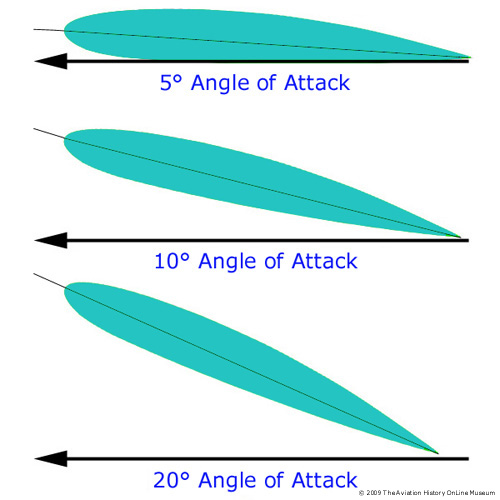

By Ritvik Agarwal
When a wing, with a small angle of attack(0-6°) passes through a stream of air, air divides into two parts, one flows over the object while the other part flows below it. When a planar wing is used instead of an airfoil, the streamline flow of air is obstructed and the two parts turns into a gush of turbulent air. Thus creating a lot of induced drag.
On the other hand, in the case of an airfoil section, a void is created at the rear end of the section. Hence, the air particles tend to move close to the airfoil-shaped object causing least disturbance in the air when such an object passes through the air. It is this curvilinear path due to which lift is produced. The reason for an airfoil to create lift is that the air molecules follow a curved path because of which they need a centripetal force. The only force that can act on these particles in the given scenario is that of air pressure. Now, smaller the radius larger has to be the force and hence air pressure. Thus, the higher pressure below the wing and lower above it.
On increasing angle of attack, drag increases indefinitely while lift increases until the Stall angle is reached and then decreases indefinitely. Increase in Angle of Attack(AoA) after stall angle leads to greater obstruction of the streamlined flow of air and hence greater drag force. The major reason for creation of lift i.e. the curvilinear motion of the air particles also decreases and turns into a turbulent(hence, shapeless) flow.
YouTube Sadraey ( Daniel Webster College ) Teaching notes of Dr. Mohammad